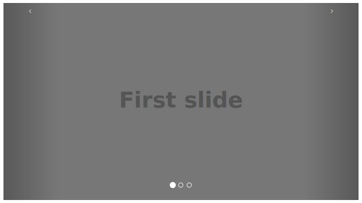
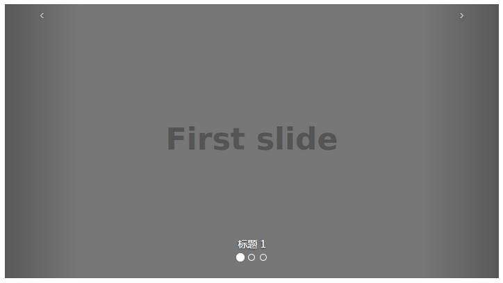
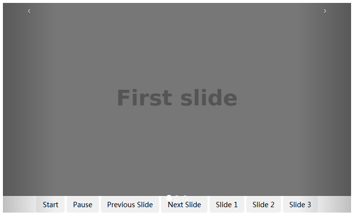
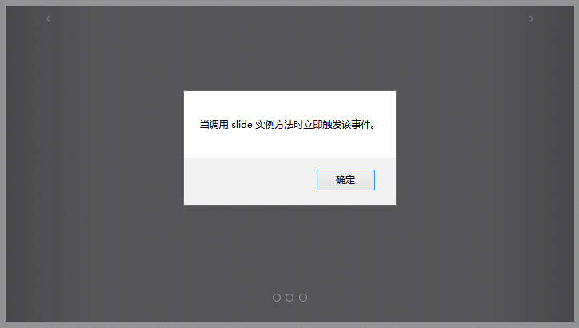

Bootstrap 轮播（Carousel）
Bootstrap 轮播（Carousel）插件是一种灵活的响应式的向站点添加滑块的方式。除此之外，内容也是足够灵活的，可以是图像、内嵌框架、视频或者其他您想要放置的任何类型的内容。
如果您想要单独引用该插件的功能，那么您需要引用 carousel.js。或者，正如 Bootstrap 插件概览 一章中所提到，您可以引用 bootstrap.js 或压缩版的 bootstrap.min.js。
实例
下面是一个简单的幻灯片，使用 Bootstrap 轮播（Carousel）插件显示了一个循环播放元素的通用组件。为了实现轮播，您只需要添加带有该标记的代码即可。不需要使用 data 属性，只需要简单的基于 class 的开发即可。
<!DOCTYPE html> <html> <head> <title>Bootstrap 实例 - 简单的轮播（Carousel）插件</title> <link href="/bootstrap/css/bootstrap.min.css" rel="stylesheet"> <script src="/scripts/jquery.min.js"></script> <script src="/bootstrap/js/bootstrap.min.js"></script> </head> <body> <div id="myCarousel" class="carousel slide"> <!-- 轮播（Carousel）指标 --> <ol class="carousel-indicators"> <li data-target="#myCarousel" data-slide-to="0" class="active"></li> <li data-target="#myCarousel" data-slide-to="1"></li> <li data-target="#myCarousel" data-slide-to="2"></li> </ol> <!-- 轮播（Carousel）项目 --> <div class="carousel-inner"> <div class="item active"> <img src="/wp-content/uploads/2014/07/slide1.png" alt="First slide"> </div> <div class="item"> <img src="/wp-content/uploads/2014/07/slide2.png" alt="Second slide"> </div> <div class="item"> <img src="/wp-content/uploads/2014/07/slide3.png" alt="Third slide"> </div> </div> <!-- 轮播（Carousel）导航 --> <a class="carousel-control left" href="#myCarousel" data-slide="prev">‹</a> <a class="carousel-control right" href="#myCarousel" data-slide="next">›</a> </div> </body> </html>
结果如下所示：

可选的标题
您可以通过 .item 内的 .carousel-caption 元素向幻灯片添加标题。只需要在该处放置任何可选的 HTML 即可，它会自动对齐并格式化。下面的实例演示了这点：
<!DOCTYPE html> <html> <head> <title>Bootstrap 实例 - 轮播（Carousel）插件的标题</title> <link href="/bootstrap/css/bootstrap.min.css" rel="stylesheet"> <script src="/scripts/jquery.min.js"></script> <script src="/bootstrap/js/bootstrap.min.js"></script> </head> <body> <div id="myCarousel" class="carousel slide"> <!-- 轮播（Carousel）指标 --> <ol class="carousel-indicators"> <li data-target="#myCarousel" data-slide-to="0" class="active"></li> <li data-target="#myCarousel" data-slide-to="1"></li> <li data-target="#myCarousel" data-slide-to="2"></li> </ol> <!-- 轮播（Carousel）项目 --> <div class="carousel-inner"> <div class="item active"> <img src="/wp-content/uploads/2014/07/slide1.png" alt="First slide"> <div class="carousel-caption">标题 1</div> </div> <div class="item"> <img src="/wp-content/uploads/2014/07/slide2.png" alt="Second slide"> <div class="carousel-caption">标题 2</div> </div> <div class="item"> <img src="/wp-content/uploads/2014/07/slide3.png" alt="Third slide"> <div class="carousel-caption">标题 3</div> </div> </div> <!-- 轮播（Carousel）导航 --> <a class="carousel-control left" href="#myCarousel" data-slide="prev">‹</a> <a class="carousel-control right" href="#myCarousel" data-slide="next">›</a> </div> </body> </html>
结果如下所示：

用法
- 通过 data 属性：使用 data 属性可以很容易控制轮播（Carousel）的位置。
- 属性 data-slide 接受关键字 prev 或 next，用来改变幻灯片相对于当前位置的位置。
- 使用 data-slide-to 来向轮播床底一个原始滑动索引，data-slide-to="2" 将把滑块移动到一个特定的索引，索引从 0 开始计数。
- data-ride="carousel" 属性用于标记轮播在页面加载时就开始动画播放。
- 通过 JavaScript：轮播（Carousel）可通过 JavaScript 手动调用，如下所示：
$('.carousel').carousel()
选项
有一些选项是通过 data 属性或 JavaScript 来传递的。下表列出了这些选项：
| 选项名称 | 类型/默认值 | Data 属性名称 | 描述 |
|---|---|---|---|
| interval | number 默认值：5000 | data-interval | 自动循环每个项目之间延迟的时间量。如果为 false，轮播将不会自动循环。 |
| pause | string 默认值："hover" | data-pause | 鼠标进入时暂停轮播循环，鼠标离开时恢复轮播循环。 |
| wrap | boolean 默认值：true | data-wrap | 轮播是否连续循环。 |
方法
下面是一些轮播（Carousel）插件中有用的方法：
| 方法 | 描述 | 实例 |
|---|---|---|
| .carousel(options) | 初始化轮播为可选的 options 对象，并开始循环项目。 | $('#identifier').carousel({
interval: 2000
}) |
| .carousel('cycle') | 从左到右循环轮播项目。 | $('#identifier').carousel('cycle') |
| .carousel('pause') | 停止轮播循环项目。 | $('#identifier')..carousel('pause') |
| .carousel(number) | 循环轮播到某个特定的帧（从 0 开始计数，与数组类似）。 | $('#identifier').carousel(number) |
| .carousel('prev') | 循环轮播到上一个项目。 | $('#identifier').carousel('prev') |
| .carousel('next') | 循环轮播到下一个项目。 | $('#identifier').carousel('next') |
实例
下面的实例演示了方法的用法：
<!DOCTYPE html>
<html>
<head>
<title>Bootstrap 实例 - 轮播（Carousel）插件方法</title>
<link href="/bootstrap/css/bootstrap.min.css" rel="stylesheet">
<script src="/scripts/jquery.min.js"></script>
<script src="/bootstrap/js/bootstrap.min.js"></script>
</head>
<body>
<div id="myCarousel" class="carousel slide">
<!-- 轮播（Carousel）指标 -->
<ol class="carousel-indicators">
<li data-target="#myCarousel" data-slide-to="0"
class="active"></li>
<li data-target="#myCarousel" data-slide-to="1"></li>
<li data-target="#myCarousel" data-slide-to="2"></li>
</ol>
<!-- 轮播（Carousel）项目 -->
<div class="carousel-inner">
<div class="item active">
<img src="/wp-content/uploads/2014/07/slide1.png" alt="First slide">
</div>
<div class="item">
<img src="/wp-content/uploads/2014/07/slide2.png" alt="Second slide">
</div>
<div class="item">
<img src="/wp-content/uploads/2014/07/slide3.png" alt="Third slide">
</div>
</div>
<!-- 轮播（Carousel）导航 -->
<a class="carousel-control left" href="#myCarousel"
data-slide="prev">‹</a>
<a class="carousel-control right" href="#myCarousel"
data-slide="next">›</a>
<!-- 控制按钮 -->
<div style="text-align:center;">
<input type="button" class="btn start-slide" value="Start">
<input type="button" class="btn pause-slide" value="Pause">
<input type="button" class="btn prev-slide" value="Previous Slide">
<input type="button" class="btn next-slide" value="Next Slide">
<input type="button" class="btn slide-one" value="Slide 1">
<input type="button" class="btn slide-two" value="Slide 2">
<input type="button" class="btn slide-three" value="Slide 3">
</div>
</div>
<script>
$(function(){
// 初始化轮播
$(".start-slide").click(function(){
$("#myCarousel").carousel('cycle');
});
// 停止轮播
$(".pause-slide").click(function(){
$("#myCarousel").carousel('pause');
});
// 循环轮播到上一个项目
$(".prev-slide").click(function(){
$("#myCarousel").carousel('prev');
});
// 循环轮播到下一个项目
$(".next-slide").click(function(){
$("#myCarousel").carousel('next');
});
// 循环轮播到某个特定的帧
$(".slide-one").click(function(){
$("#myCarousel").carousel(0);
});
$(".slide-two").click(function(){
$("#myCarousel").carousel(1);
});
$(".slide-three").click(function(){
$("#myCarousel").carousel(2);
});
});
</script>
</body>
</html>结果如下所示：

事件
下表列出了轮播（Carousel）插件中要用到的事件。这些事件可在函数中当钩子使用。
| 事件 | 描述 | 实例 |
|---|---|---|
| slide.bs.carousel | 当调用 slide 实例方法时立即触发该事件。 | $('#identifier').on('slide.bs.carousel', function () {
// 执行一些动作...
}) |
| slid.bs.carousel | 当轮播完成幻灯片过渡效果时触发该事件。 | $('#identifier').on('slid.bs.carousel', function () {
// 执行一些动作...
}) |
实例
下面的实例演示了事件的用法：
<!DOCTYPE html>
<html>
<head>
<title>Bootstrap 实例 - 轮播（Carousel）插件事件</title>
<link href="/bootstrap/css/bootstrap.min.css" rel="stylesheet">
<script src="/scripts/jquery.min.js"></script>
<script src="/bootstrap/js/bootstrap.min.js"></script>
</head>
<body>
<div id="myCarousel" class="carousel slide">
<!-- 轮播（Carousel）指标 -->
<ol class="carousel-indicators">
<li data-target="#myCarousel" data-slide-to="0"
class="active"></li>
<li data-target="#myCarousel" data-slide-to="1"></li>
<li data-target="#myCarousel" data-slide-to="2"></li>
</ol>
<!-- 轮播（Carousel）项目 -->
<div class="carousel-inner">
<div class="item active">
<img src="/wp-content/uploads/2014/07/slide1.png" alt="First slide">
</div>
<div class="item">
<img src="/wp-content/uploads/2014/07/slide2.png" alt="Second slide">
</div>
<div class="item">
<img src="/wp-content/uploads/2014/07/slide3.png" alt="Third slide">
</div>
</div>
<!-- 轮播（Carousel）导航 -->
<a class="carousel-control left" href="#myCarousel"
data-slide="prev">‹</a>
<a class="carousel-control right" href="#myCarousel"
data-slide="next">›</a>
</div>
<script>
$(function(){
$('#myCarousel').on('slide.bs.carousel', function () {
alert("当调用 slide 实例方法时立即触发该事件。");
});
});
</script>
</body>
</html>结果如下所示：
